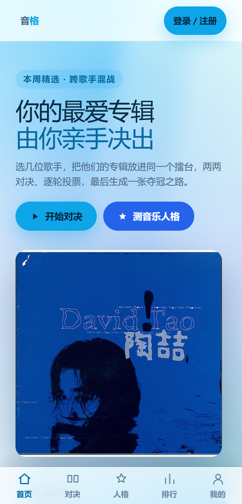
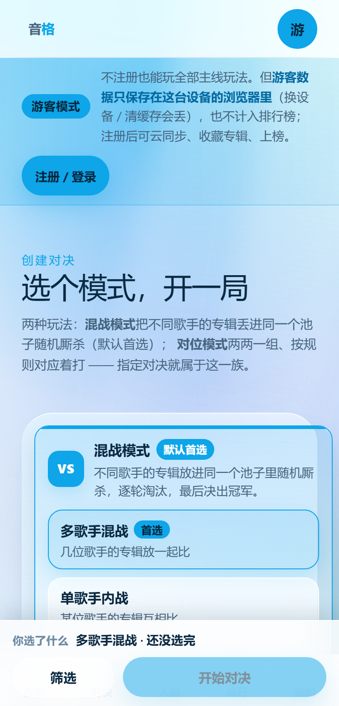
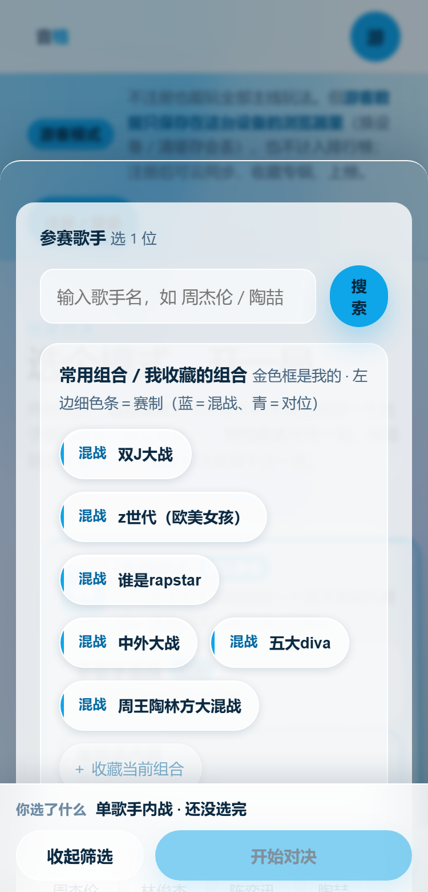
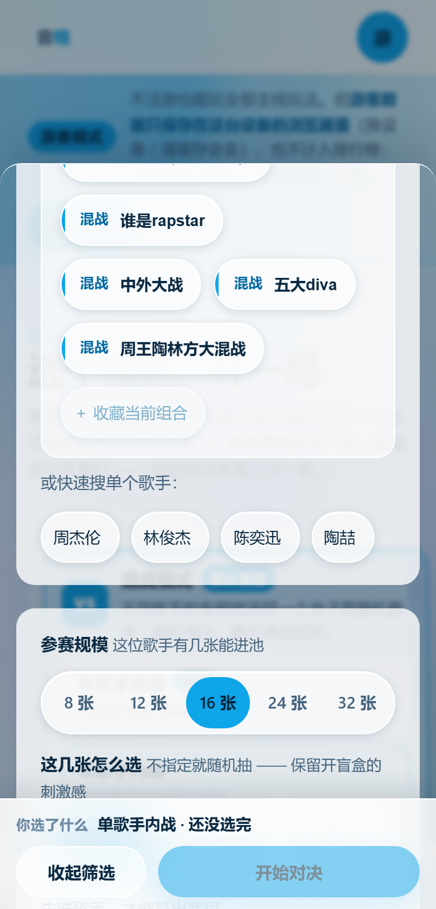
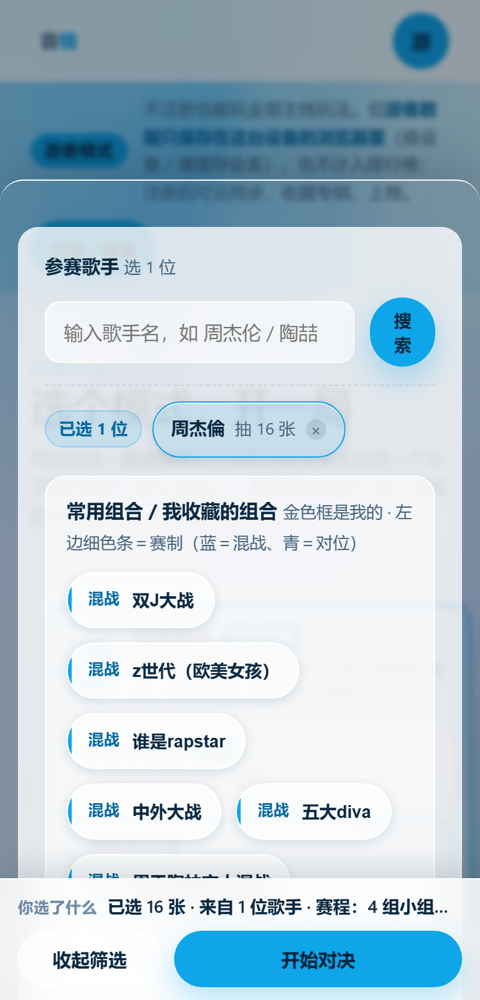
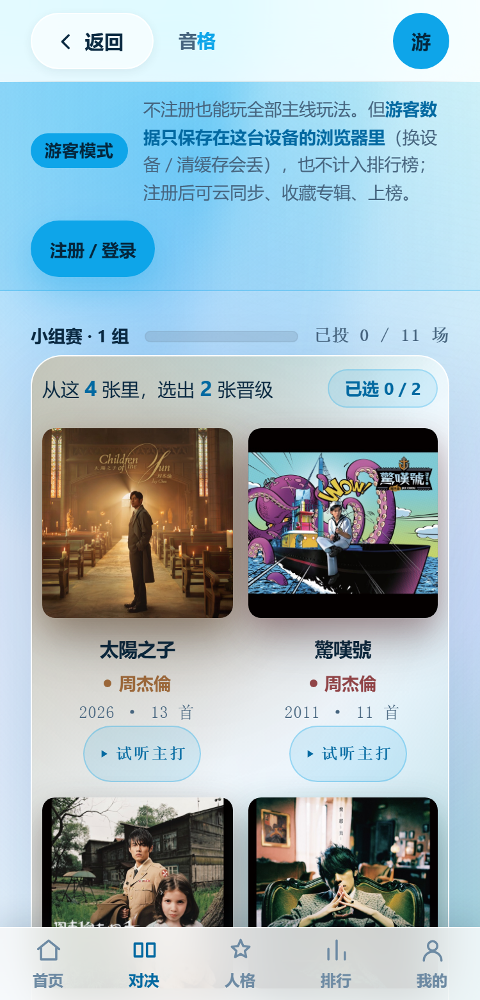
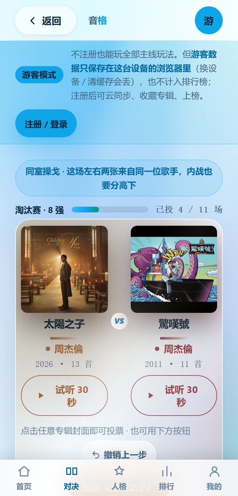
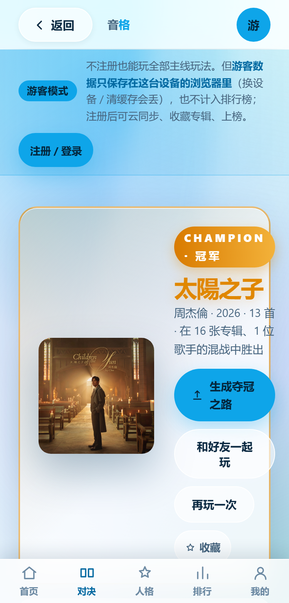
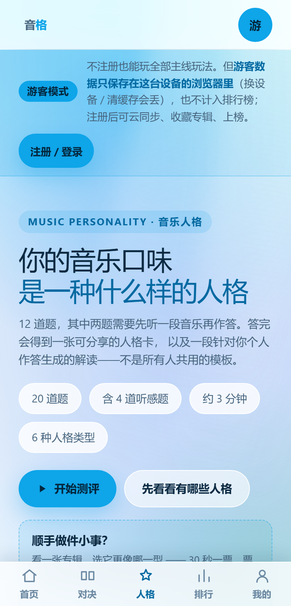
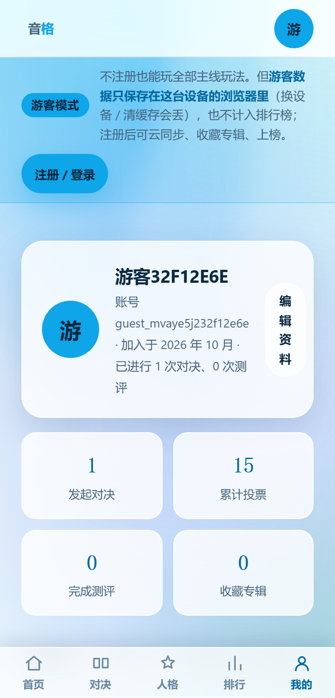

你说得对——我上一轮只交了文档，没给你能看、能点的东西。这一页就是补这个： 11 张真机截图（不是设计稿，是从真库真后端真打了一局截下来的）， 加上三种打开方式，你挑顺手的那个。
双击项目根目录的 start-mobile-demo.bat，等 10 秒会自动打开网页。
然后按 F12 → 点左上角手机图标（或 Ctrl+Shift+M）
→ 顶部设备选 iPhone SE 或 Pixel 5 → 刷新。
这就是手机上看到的样子（含底部 Tab、安全区、触控热区）。
手机连同一个 Wi-Fi，浏览器打开
http://192.168.1.65:5173（这个 IP 每次可能变，
以黑窗口里打印的那串为准）。
这是真机：有真触摸、真安全区、真拇指操作。推荐用这个验收。
什么都不用装，往下滚就是 11 张真机截图，每张都标了"这里为什么这么放"。
看完想动手了再回 A / B。
stop-dev.bat 再重试；
③ 手机打不开 —— 确认手机和电脑在同一个 Wi-Fi，且电脑弹出的"Windows 防火墙"提示里勾选了专用网络。
还有问题就把黑窗口里的字发我。| 步 | 做什么 | 应该看到什么 |
|---|---|---|
| 1 | 打开首页，看最底部 | 底部 5 个 Tab：首页 / 对决 / 人格 / 排行 / 我的。点每个都能跳，当前项会高亮 |
| 2 | 点「开始对决」→ 选「单歌手内战」 | 选完模式，底部自动升起筛选弹层（不用你去找） |
| 3 | 在弹层里搜「周杰伦」 | 候选第一位是曲库里有 17 张专辑的「周杰倫」，不是卡拉OK团（这是本轮修掉的 bug） |
| 4 | 点候选上的「加入」 | 底部那行立刻变成「已选 8 张 · 来自 1 位歌手 · 共 5 场」—— 选了什么看得见 |
| 5 | 点「开始对决」 | 先打小组赛（4 张里勾 2 张 → 点确认），进度写在页头 |
| 6 | 进淘汰赛 | 左右两张并排，专辑名在封面正下方，试听在专辑名正下方；点封面即投票，点「试听 30 秒」不会误投 |
| 7 | 一路打完 | 结果页出冠军卡 + 「生成夺冠之路」；分享页能存图 |
| 8 | 回底部 Tab 点「我的」 | 能看到刚才这一局的记录（对决 / 测评 / 收藏 / 组合四个 Tab） |










tools/pw/shot-mobile-demo.mjs。isMobile:true、hasTouch:true、2 倍屏 —— 和 iPhone SE / 主流安卓一致。docs/figures/mobile-demo/ ·
一键启动 start-mobile-demo.bat · 完整方案见 docs/移动端适配方案.html